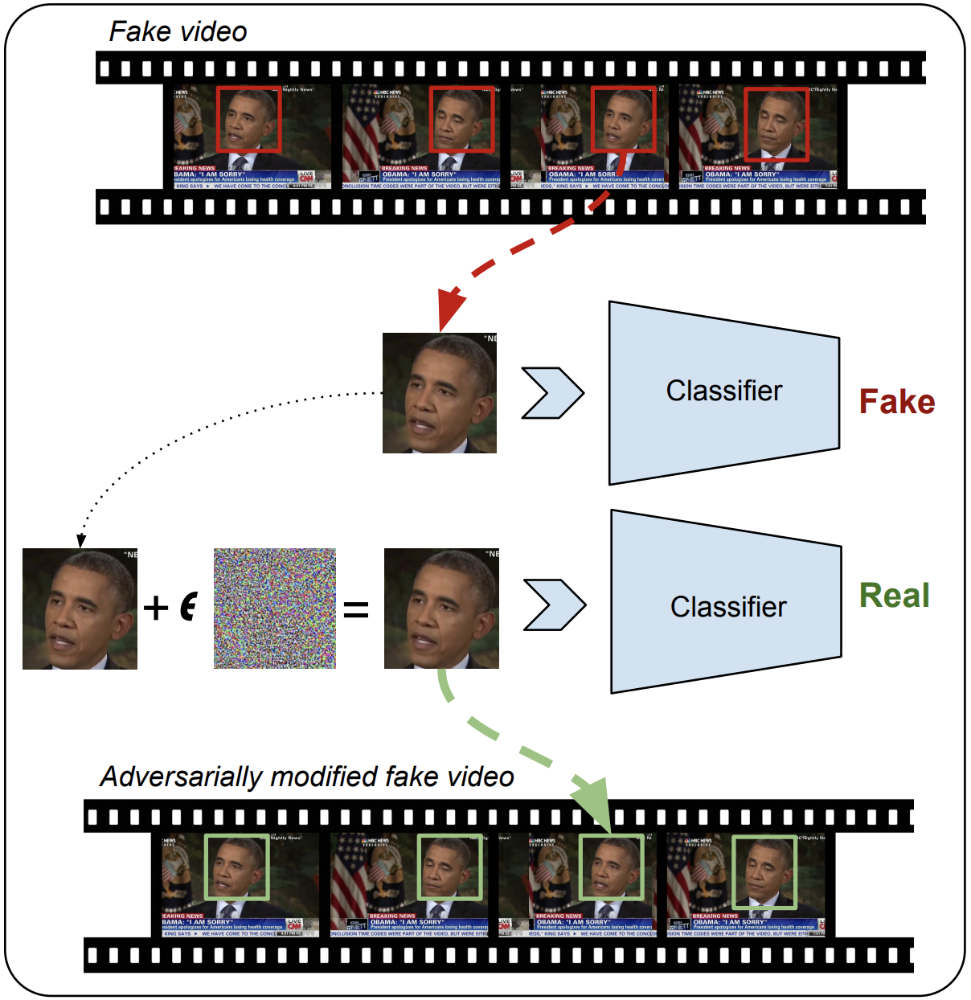

|
In this work, we demonstrate the effectiveness of our attack on Deepfake detectors which rely on CNN based classification models. These victim detectors work on the frame level and classify each frame independently as either Real or Fake using the following two-step pipeline:
- A face tracking model extracts the bounding box of the face in a given frame.
- The cropped face is then resized appropriately and passed as input to a CNN based classifier to be labelled as either real or fake. In our work, we consider two victim CNN classifiers: XceptionNet and MesoNet
In order to fool such detectors into classifying fake videos as real, we craft adversarial examples for each frame of the given video and combine them together into an adversarially modified fake video. We perform the attack in both white box and black box attack settings assuming different attacker capabilities and goals, and evaluate the effectiveness of attack on both raw and compressed adversarial videos.
|

|